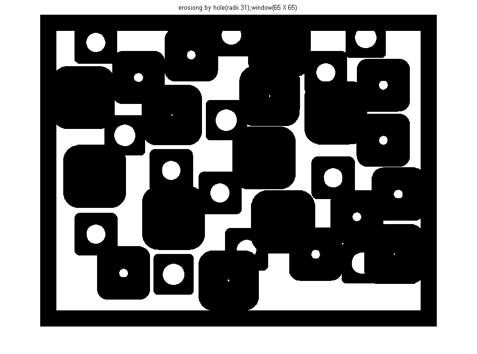

<!DOCTYPE html
  PUBLIC "-//W3C//DTD HTML 4.01 Transitional//EN">
<html><head>
      <meta http-equiv="Content-Type" content="text/html; charset=utf-8">
   <!--
This HTML was auto-generated from MATLAB code.
To make changes, update the MATLAB code and republish this document.
      --><title>main</title><meta name="generator" content="MATLAB 8.1"><link rel="schema.DC" href="http://purl.org/dc/elements/1.1/"><meta name="DC.date" content="2014-01-31"><meta name="DC.source" content="main.m"><style type="text/css">
html,body,div,span,applet,object,iframe,h1,h2,h3,h4,h5,h6,p,blockquote,pre,a,abbr,acronym,address,big,cite,code,del,dfn,em,font,img,ins,kbd,q,s,samp,small,strike,strong,sub,sup,tt,var,b,u,i,center,dl,dt,dd,ol,ul,li,fieldset,form,label,legend,table,caption,tbody,tfoot,thead,tr,th,td{margin:0;padding:0;border:0;outline:0;font-size:100%;vertical-align:baseline;background:transparent}body{line-height:1}ol,ul{list-style:none}blockquote,q{quotes:none}blockquote:before,blockquote:after,q:before,q:after{content:'';content:none}:focus{outine:0}ins{text-decoration:none}del{text-decoration:line-through}table{border-collapse:collapse;border-spacing:0}

html { min-height:100%; margin-bottom:1px; }
html body { height:100%; margin:0px; font-family:Arial, Helvetica, sans-serif; font-size:10px; color:#000; line-height:140%; background:#fff none; overflow-y:scroll; }
html body td { vertical-align:top; text-align:left; }

h1 { padding:0px; margin:0px 0px 25px; font-family:Arial, Helvetica, sans-serif; font-size:1.5em; color:#d55000; line-height:100%; font-weight:normal; }
h2 { padding:0px; margin:0px 0px 8px; font-family:Arial, Helvetica, sans-serif; font-size:1.2em; color:#000; font-weight:bold; line-height:140%; border-bottom:1px solid #d6d4d4; display:block; }
h3 { padding:0px; margin:0px 0px 5px; font-family:Arial, Helvetica, sans-serif; font-size:1.1em; color:#000; font-weight:bold; line-height:140%; }

a { color:#005fce; text-decoration:none; }
a:hover { color:#005fce; text-decoration:underline; }
a:visited { color:#004aa0; text-decoration:none; }

p { padding:0px; margin:0px 0px 20px; }
img { padding:0px; margin:0px 0px 20px; border:none; }
p img, pre img, tt img, li img { margin-bottom:0px; } 

ul { padding:0px; margin:0px 0px 20px 23px; list-style:square; }
ul li { padding:0px; margin:0px 0px 7px 0px; }
ul li ul { padding:5px 0px 0px; margin:0px 0px 7px 23px; }
ul li ol li { list-style:decimal; }
ol { padding:0px; margin:0px 0px 20px 0px; list-style:decimal; }
ol li { padding:0px; margin:0px 0px 7px 23px; list-style-type:decimal; }
ol li ol { padding:5px 0px 0px; margin:0px 0px 7px 0px; }
ol li ol li { list-style-type:lower-alpha; }
ol li ul { padding-top:7px; }
ol li ul li { list-style:square; }

.content { font-size:1.2em; line-height:140%; padding: 20px; }

pre, tt, code { font-size:12px; }
pre { margin:0px 0px 20px; }
pre.error { color:red; }
pre.codeinput { padding:10px; border:1px solid #d3d3d3; background:#f7f7f7; }
pre.codeoutput { padding:10px 11px; margin:0px 0px 20px; color:#4c4c4c; }

@media print { pre.codeinput, pre.codeoutput { word-wrap:break-word; width:100%; } }

span.keyword { color:#0000FF }
span.comment { color:#228B22 }
span.string { color:#A020F0 }
span.untermstring { color:#B20000 }
span.syscmd { color:#B28C00 }

.footer { width:auto; padding:10px 0px; margin:25px 0px 0px; border-top:1px dotted #878787; font-size:0.8em; line-height:140%; font-style:italic; color:#878787; text-align:left; float:none; }
.footer p { margin:0px; }
.footer a { color:#878787; }
.footer a:hover { color:#878787; text-decoration:underline; }
.footer a:visited { color:#878787; }

table th { padding:7px 5px; text-align:left; vertical-align:middle; border: 1px solid #d6d4d4; font-weight:bold; }
table td { padding:7px 5px; text-align:left; vertical-align:top; border:1px solid #d6d4d4; }


  </style></head><body><div class="content"><h1></h1><!--introduction--><pre>This project is mainly focus on applying the hit-or-miss transform to detect three middle-
size disks. The given binary-valued image considers WHITE to be background and
BLACK to be foreground and with ve dierent sized black disks scattered around.</pre><pre>The objectives of this project 1 are listed as follows:
 1. Remove the 10% level of salt-and-pepper noise.
 2. Threshold the input image to convert to a truly binary-valued image.
 3. Design an appropriate hit-or-miss transform</pre><!--/introduction--><pre class="codeinput">clc; clear;
f=imread(<span class="string">'RandomDisks-P10.jpg'</span>);        <span class="comment">%input a image as a matrix</span>
figure(<span class="string">'name'</span>,<span class="string">'Original image'</span>),imshow(f);
title(<span class="string">'Original image'</span>);
</pre> <p>Convert to grayscale</p><pre class="codeinput">f = uint16(f);                          <span class="comment">% allow f can be larger number</span>
X = (f(:,:,1) + f(:,:,2) + f(:,:,3))/3; <span class="comment">% X is a grey-level image</span>
X = uint8(X);
</pre><pre>Pepper-and-Salt-Noise filtering
Method 1: using median filtering</pre><pre class="codeinput">Y = medianFilt(X,[3 3]);    <span class="comment">% should be defined by ourselves %[5 5] is local window %purpose: separate</span>
figure(<span class="string">'name'</span>,<span class="string">'After median filtering'</span>), imshow(Y);
title(<span class="string">'After median filtering'</span>);
Y=threholdv(Y,200);         <span class="comment">% choose 200 as threshod value for thresholding</span>
figure(<span class="string">'name'</span>,<span class="string">'After thresholding after median filtering'</span>), imshow(Y);
title(<span class="string">'After thresholding after median filtering'</span>);
</pre>  <p>Method 2: using close / open method The procedure is as follow: 1. thresholding grayscale image to binary image.    Then, because by choosing a propriate threshold value, holes in disks    will disappear and remain pepper noise. 2. create an small disk ,O, which slightly bigger than pepper as structuring element 3. implement opening method to remove small detail (pepper-noise)</p><pre class="codeinput">Y=threholdv(X,200);                     <span class="comment">% choose 200 as threshod value for thresholding</span>
figure(<span class="string">'name'</span>,<span class="string">'After thresholding from original image'</span>), imshow(Y);
title(<span class="string">'After thresholding from original image'</span>);
O = segen(1,[3 3]);                     <span class="comment">% choose a O slightly bigger than pepper</span>
Y = dilation1(Y,O);                     <span class="comment">% implement opening method: 1. dilation the image by O</span>
Y = erosion1(Y,O);                      <span class="comment">%                           2. erosion the image by O</span>
figure(<span class="string">'name'</span>,<span class="string">'Aftering opening'</span>), imshow(Y);
title(<span class="string">'After opening'</span>);
</pre>  <p>For convinence of computaton, we inverse the value of pixels, that is grey level 255 means 0, and grey level 0 means 255</p><pre class="codeinput">Y=clm(Y);               <span class="comment">% inverse the value of pixels; clm.m is a function to implement complement of Y</span>
figure(<span class="string">'name'</span>,<span class="string">'Inverse value for computation'</span>), imshow(Y);
title(<span class="string">'Inverse value for computation'</span>);
</pre> <p>Oberserving disks dimention We need to create proper sizes of disks as structuring element, so we use impixelinfor to show the coodinates in the image and observe and report the radius of disks in in the image</p><pre class="codeinput">impixelinfo;
</pre> <pre class="codeinput"><span class="comment">% select the second smallest disk as structring element</span>
SE = segen(11,[23 23]);                 <span class="comment">% generate a disk with radii 11 as struturing element,SE</span>
SE = sym1(SE);                          <span class="comment">% Symmetry of SE</span>

<span class="comment">% erosion of Y by structuring element SE</span>
Y_subSE = erosion1(Y,SE);               <span class="comment">% Y erosiong by SE</span>
figure(<span class="string">'name'</span>,<span class="string">'erosiong by disks (radii 11)'</span>),imshow(Y_subSE);
title(<span class="string">'erosiong by disks (radii 11)'</span>);
</pre> <p>erosion of the complement of Y by structuring element W-A'</p><pre class="codeinput">Yc = clm(Y);
SE1 = segen(15, [31 31]);               <span class="comment">% [27 27] is the dimension of W and the radii of A' is 13</span>
W_A = sym1(SE1);                        <span class="comment">% W-A'</span>
W_A = clm(W_A);                         <span class="comment">% Symmetry of W-A'</span>

<span class="comment">% erosion of the complement of Y by structuring element W-A'</span>
Yc_subW_A = erosion1(Yc,W_A);           <span class="comment">% Yc erosion by W-A'</span>
figure(<span class="string">'name'</span>,<span class="string">'erosiong by hole(radii 15),window(31 X 31)'</span>),imshow(Yc_subW_A);
title(<span class="string">'erosiong by hole(radii 15),window(31 X 31)'</span>);
</pre> <pre class="codeinput">Y_ress = Y_subSE &amp; Yc_subW_A;           <span class="comment">% use hit-and-miss method to detect the central point of selected disks</span>
figure(<span class="string">'name'</span>,<span class="string">'central points of second smallest disks'</span>),imshow(Y_ress);
title(<span class="string">'central points of second smallest disks'</span>);
</pre> <pre class="codeinput"><span class="comment">%  select the middle disk as structring element</span>
SE=segen(21,[43 43]);                   <span class="comment">% generate a disk with radii 21 as struturing element,SE</span>
SE=sym1(SE);

<span class="comment">% erosion of Y by structuring element SE</span>
Y_subSE = erosion1(Y,SE);              <span class="comment">% Y erosiong by the symmatry of SE</span>
figure(<span class="string">'name'</span>,<span class="string">'erosiong by disks (radii 21)'</span>),imshow(Y_subSE);
title(<span class="string">'erosiong by disks (radii 21)'</span>);
</pre> <p>erosion of the complement of Y by structuring element W-A'</p><pre class="codeinput">Yc=clm(Y);
SE1=segen(23,[48 48]);                  <span class="comment">% [48 48] is the dimension of W and the radii of A' is 23</span>
W_A = sym1(SE1);                        <span class="comment">% W-A'</span>
W_A = clm(W_A);                         <span class="comment">% Symmetry of W-A'</span>

<span class="comment">% erosion of the complement of Y by structuring element W-A'</span>
Yc_subW_A = erosion1(Yc,W_A);            <span class="comment">% Yc erosion by W-A'</span>
figure(<span class="string">'name'</span>,<span class="string">'erosiong by hole(radii 23),window(48 X 48)'</span>),imshow(Yc_subW_A);
title(<span class="string">'erosiong by hole(radii 23),window(48 X 48)'</span>);
</pre><pre class="codeoutput">Warning: Integer operands are required for colon operator when used as index 
Warning: Integer operands are required for colon operator when used as index 
</pre> <pre class="codeinput">Y_rem = Y_subSE &amp; Yc_subW_A;             <span class="comment">% use hit-and-miss method to detect the central point of selected disks</span>
figure(<span class="string">'name'</span>,<span class="string">'central points of middle disks'</span>),imshow(Y_rem);
title(<span class="string">'central points of middle disks'</span>);
</pre> <pre class="codeinput"><span class="comment">% select the second biggest disk as structring element</span>
SE=segen(28,[57 57]);                   <span class="comment">% generate a disk with radii 21 as struturing element,SE</span>
SE=sym1(SE);

<span class="comment">% erosion of Y by structuring element SE</span>
Y_subSE = erosion1(Y,SE);               <span class="comment">% Y erosiong by the symmatry of SE</span>
figure(<span class="string">'name'</span>,<span class="string">'erosiong by disks (radii 28)'</span>),imshow(Y_subSE);
title(<span class="string">'erosiong by disks (radii 28)'</span>);
</pre> <p>erosion of the complement of Y by structuring element W-A</p><pre class="codeinput">Yc=clm(Y);
SE1=segen(31,[65 65]);                  <span class="comment">% [65 65] is the dimension of W and the radii of A' is 31</span>
W_A = sym1(SE1);                        <span class="comment">% W-A'</span>
W_A = clm(W_A);                         <span class="comment">% Symmetry of W-A'</span>

<span class="comment">% erosion of the complement of Y by structuring element W-A'</span>
Yc_subW_A = erosion1(Yc,W_A);            <span class="comment">% Yc erosion by W-A'</span>
figure(<span class="string">'name'</span>,<span class="string">'erosiong by hole(radii 31),window(65 X 65)'</span>),imshow(Yc_subW_A);
title(<span class="string">'erosiong by hole(radii 31),window(65 X 65)'</span>);
</pre> <pre class="codeinput">Y_resb = Y_subSE &amp; Yc_subW_A;            <span class="comment">% use hit-and-miss method to detect the central point of selected disks</span>
figure(<span class="string">'name'</span>,<span class="string">'central points of sencond biggest disks'</span>),imshow(Y_resb);
title(<span class="string">'central points of sencond biggest disks'</span>);
</pre> <pre>Final result</pre><pre class="codeinput">Y_final = Y_ress | ( Y_rem | Y_resb);      <span class="comment">% combine central points of three middle-size disks in the same image</span>
Y_final = dilation1( Y_final,segen(2,[5 5]));   <span class="comment">% In order to let the central points more apparent, dilation these points a little</span>
figure(<span class="string">'name'</span>,<span class="string">'central points of three middle-disks'</span>),imshow(Y_final);
title(<span class="string">'central points of three middle-disks'</span>);
</pre> <pre class="codeinput">pointcoordi = findcoodi(Y_final);
X_final=X;
<span class="comment">% mark the central points on the original image</span>
<span class="keyword">for</span> i=1:size(pointcoordi(:,1))
   X_final( pointcoordi(i,1) , pointcoordi(i,2) ) = 255;
<span class="keyword">end</span>
figure(<span class="string">'name'</span>,<span class="string">'final result'</span>),imshow(X_final);
title(<span class="string">'final result'</span>);
</pre> <p class="footer"><br><a href="http://www.mathworks.com/products/matlab/">Published with MATLAB&reg; R2013a</a><br></p></div><!--
##### SOURCE BEGIN #####
%%
%  This project is mainly focus on applying the hit-or-miss transform to detect three middle-
%  size disks. The given binary-valued image considers WHITE to be background and
%  BLACK to be foreground and with ve dierent sized black disks scattered around. 
% 
%  The objectives of this project 1 are listed as follows:
%  1. Remove the 10% level of salt-and-pepper noise.
%  2. Threshold the input image to convert to a truly binary-valued image.
%  3. Design an appropriate hit-or-miss transform 
%%
clc; clear;
f=imread('RandomDisks-P10.jpg');        %input a image as a matrix
figure('name','Original image'),imshow(f);
title('Original image');
%%
% Convert to grayscale
f = uint16(f);                          % allow f can be larger number
X = (f(:,:,1) + f(:,:,2) + f(:,:,3))/3; % X is a grey-level image
X = uint8(X);
%%
%  Pepper-and-Salt-Noise filtering 
%  Method 1: using median filtering
Y = medianFilt(X,[3 3]);    % should be defined by ourselves %[5 5] is local window %purpose: separate
figure('name','After median filtering'), imshow(Y);
title('After median filtering');
Y=threholdv(Y,200);         % choose 200 as threshod value for thresholding
figure('name','After thresholding after median filtering'), imshow(Y);
title('After thresholding after median filtering');

%%
% Method 2: using close / open method
% The procedure is as follow:
% 1. thresholding grayscale image to binary image.
%    Then, because by choosing a propriate threshold value, holes in disks
%    will disappear and remain pepper noise.
% 2. create an small disk ,O, which slightly bigger than pepper as structuring element
% 3. implement opening method to remove small detail (pepper-noise)
Y=threholdv(X,200);                     % choose 200 as threshod value for thresholding
figure('name','After thresholding from original image'), imshow(Y);
title('After thresholding from original image');
O = segen(1,[3 3]);                     % choose a O slightly bigger than pepper
Y = dilation1(Y,O);                     % implement opening method: 1. dilation the image by O
Y = erosion1(Y,O);                      %                           2. erosion the image by O
figure('name','Aftering opening'), imshow(Y);
title('After opening');
%%
% For convinence of computaton, we inverse the value of pixels, that is
% grey level 255 means 0, and grey level 0 means 255

Y=clm(Y);               % inverse the value of pixels; clm.m is a function to implement complement of Y
figure('name','Inverse value for computation'), imshow(Y);      
title('Inverse value for computation');
%%
% Oberserving disks dimention   
% We need to create proper sizes of disks as structuring element, 
% so we use impixelinfor to show the coodinates in the image and observe
% and report the radius of disks in in the image
impixelinfo;            
%%

% select the second smallest disk as structring element 
SE = segen(11,[23 23]);                 % generate a disk with radii 11 as struturing element,SE
SE = sym1(SE);                          % Symmetry of SE

% erosion of Y by structuring element SE
Y_subSE = erosion1(Y,SE);               % Y erosiong by SE
figure('name','erosiong by disks (radii 11)'),imshow(Y_subSE);
title('erosiong by disks (radii 11)');
%%
% erosion of the complement of Y by structuring element W-A'
Yc = clm(Y);
SE1 = segen(15, [31 31]);               % [27 27] is the dimension of W and the radii of A' is 13
W_A = sym1(SE1);                        % W-A' 
W_A = clm(W_A);                         % Symmetry of W-A' 

% erosion of the complement of Y by structuring element W-A'
Yc_subW_A = erosion1(Yc,W_A);           % Yc erosion by W-A'
figure('name','erosiong by hole(radii 15),window(31 X 31)'),imshow(Yc_subW_A);
title('erosiong by hole(radii 15),window(31 X 31)');
%%
Y_ress = Y_subSE & Yc_subW_A;           % use hit-and-miss method to detect the central point of selected disks
figure('name','central points of second smallest disks'),imshow(Y_ress);
title('central points of second smallest disks');
%%

%  select the middle disk as structring element 
SE=segen(21,[43 43]);                   % generate a disk with radii 21 as struturing element,SE
SE=sym1(SE);

% erosion of Y by structuring element SE
Y_subSE = erosion1(Y,SE);              % Y erosiong by the symmatry of SE
figure('name','erosiong by disks (radii 21)'),imshow(Y_subSE);
title('erosiong by disks (radii 21)');
%%
% erosion of the complement of Y by structuring element W-A'
Yc=clm(Y);
SE1=segen(23,[48 48]);                  % [48 48] is the dimension of W and the radii of A' is 23
W_A = sym1(SE1);                        % W-A' 
W_A = clm(W_A);                         % Symmetry of W-A' 

% erosion of the complement of Y by structuring element W-A'
Yc_subW_A = erosion1(Yc,W_A);            % Yc erosion by W-A'
figure('name','erosiong by hole(radii 23),window(48 X 48)'),imshow(Yc_subW_A);
title('erosiong by hole(radii 23),window(48 X 48)');
%%
Y_rem = Y_subSE & Yc_subW_A;             % use hit-and-miss method to detect the central point of selected disks
figure('name','central points of middle disks'),imshow(Y_rem);
title('central points of middle disks');
%%

% select the second biggest disk as structring element  
SE=segen(28,[57 57]);                   % generate a disk with radii 21 as struturing element,SE
SE=sym1(SE);

% erosion of Y by structuring element SE
Y_subSE = erosion1(Y,SE);               % Y erosiong by the symmatry of SE
figure('name','erosiong by disks (radii 28)'),imshow(Y_subSE);
title('erosiong by disks (radii 28)');
%%
% erosion of the complement of Y by structuring element W-A
Yc=clm(Y);
SE1=segen(31,[65 65]);                  % [65 65] is the dimension of W and the radii of A' is 31
W_A = sym1(SE1);                        % W-A' 
W_A = clm(W_A);                         % Symmetry of W-A' 

% erosion of the complement of Y by structuring element W-A'
Yc_subW_A = erosion1(Yc,W_A);            % Yc erosion by W-A'
figure('name','erosiong by hole(radii 31),window(65 X 65)'),imshow(Yc_subW_A);
title('erosiong by hole(radii 31),window(65 X 65)');
%%
Y_resb = Y_subSE & Yc_subW_A;            % use hit-and-miss method to detect the central point of selected disks
figure('name','central points of sencond biggest disks'),imshow(Y_resb);
title('central points of sencond biggest disks');
%%
%  Final result 
Y_final = Y_ress | ( Y_rem | Y_resb);      % combine central points of three middle-size disks in the same image
Y_final = dilation1( Y_final,segen(2,[5 5]));   % In order to let the central points more apparent, dilation these points a little
figure('name','central points of three middle-disks'),imshow(Y_final);
title('central points of three middle-disks');
%%
pointcoordi = findcoodi(Y_final);
X_final=X;
% mark the central points on the original image
for i=1:size(pointcoordi(:,1))
   X_final( pointcoordi(i,1) , pointcoordi(i,2) ) = 255;
end
figure('name','final result'),imshow(X_final);
title('final result');
    


##### SOURCE END #####
--></body></html>